Spreadsheets workshop: Britain's imports, 1856–1906
Three Questions this week: due Thursday, October 15, at 11:59 pm on Canvas.
Submit three numbered entries through the Canvas assignment. This week they can engage any of:
- E. P. Thompson, “Time, Work-Discipline, and Industrial Capitalism” (this week's reading)
- British trade statistics
- Spreadsheets
- StoryMaps
At least two entries must be genuine discussion questions; the third may be a question, comment, or connection.
What this workshop is for
Milestone 4 asks you to build a chart in spreadsheet software from data in your own sources and to submit the spreadsheet with it. This workshop is the practice run. You will work with a large, real historical dataset: every import into the United Kingdom recorded in the Annual Statement of Trade, every fifth year from 1856 to 1906. That is 38,590 rows, transcribed and error-checked from the House of Commons Parliamentary Papers by me and a team of students.
Along the way you will learn to filter, sort, write a simple formula, and make a chart with proper labels. You will also run into the three problems that trip up almost everyone who charts historical statistics: totals counted twice, categories that change their names, and units that don't match. Learning to spot those is the real point.
How to use this page
- Try each task yourself first. Under each task are hints that open one at a time. Open only as many as you need.
- The screenshots use a different example (tea, and the year 1876) so they show you how without giving away your answers.
- Check your work before moving on. These boxes don't give the answers. They help you spot the most common mistakes and ask you to think about what you found. Later tasks build on earlier ones.
- Still stuck? The walkthrough video shows the same steps in Excel: Spreadsheet workshop walkthrough (Panopto, 27 minutes). Each task links to the point in the video where that step begins. The video is from an earlier year: the steps are the same, but the order and a few details differ.
- Allow about 90 minutes.
Which software?
The screenshots show Excel for Windows (Microsoft 365). Mac Excel and Excel for the web look a little different but use the same menu names. On a Mac, read Ctrl as Cmd. Every step also has instructions for Google Sheets (free with any Google account), with a link to Google's own illustrated help. LibreOffice works too; its menus are close to Excel's.
Step 0. Get the data (5 minutes)
Download the spreadsheet from Zenodo: London's Ghost Acres: British Imports 1856–1906 Database. The file is Londons-Ghost-Acres-British-Imports-1856-1906.xlsx (3 MB).
Excel: open the file. Because it came from the internet, Excel opens it in Protected View: click Enable Editing in the yellow bar. Then use File > Save As to save your own working copy.
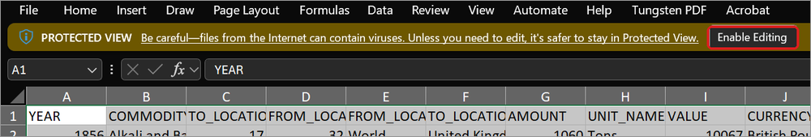
Google Sheets: go to drive.google.com, click New > File upload, and choose the file. When it appears in your Drive, double-click it, then choose Open with Google Sheets. The import can take a minute. Google's help: Upload files to Google Drive and Work with Office files.
Step 1. Meet the data (10 minutes)
Each row is one commodity, from one place, in one year. The columns you need:
| A | YEAR | 1856, 1861, 1866 … 1906 (every fifth year) |
| B | COMMODITY_NAME | The category exactly as the source printed it |
| E | FROM_LOCATION | Where the goods came from, as the source named it |
| G | AMOUNT | The quantity… |
| H | UNIT_NAME | …and its unit: tons, hundredweights, pounds, gallons, number of animals, and so on |
| I | VALUE | Declared value in British pounds (£) of that year, not adjusted for inflation |
| K | NOTE | Comments from the people who transcribed the data. Read them when they appear. |
You can ignore the other columns (location codes, map coordinates, the source series).
The most important thing on this page: for every commodity in every year, one row has FROM_LOCATION = World. That is the total printed in the source. The other rows are the individual suppliers that make up that total. If you add up every row, you count everything twice.
Tip: if a column is too narrow, Excel shows long numbers as 1.4E+08 or #####. Double-click the line between two column letters (for example, between G and H) to widen the column to fit.
Set up your sheet
Do these three things, in this order.
1. Freeze the header row
This keeps the column names visible as you scroll.
Excel: View > Freeze Panes > Freeze Top Row.
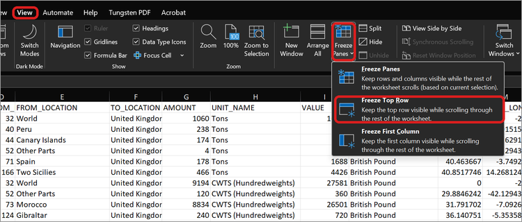
Google Sheets: View > Freeze > 1 row. Google's help: Freeze rows & columns.
2. Add a price column
Click cell Q1 and type PRICE_PER_UNIT. In Q2, type =I2/G2 (value divided by amount) and press Enter. The formula is the same in both programs.
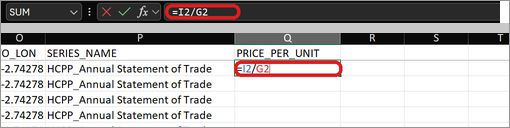
Now copy the formula down all 38,590 rows. Click Q2 again. A small square appears at its bottom-right corner: this is the fill handle. Double-click it. This works in both Excel and Google Sheets.
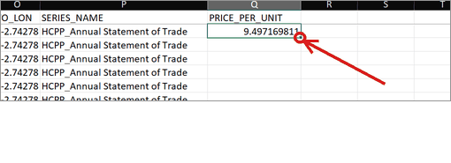
The result is the price in pounds per unit: per ton for copper, per hundredweight for cotton. Rows showing #DIV/0! are goods the source recorded by value only, with no quantity. Ignore them.
3. Turn on filters
Click any cell in the data.
Excel: Data > Filter (or Ctrl+Shift+L).
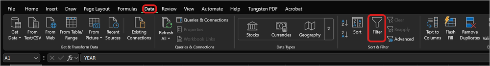
Google Sheets: Data > Create a filter. Google's help: Sort & filter your data.
A small arrow appears on every column heading. If the PRICE_PER_UNIT column has no arrow, turn the filter off and on again.
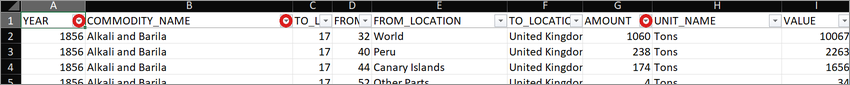
Video: 0:30 (a tour of the data and filters)
Task 1. Who supplied Britain's copper? (10 minutes)
Which country supplied the most “Copper Unwrought” to Britain in 1886? How many tons did it send, what were they worth, and what did a ton cost?
Unwrought copper had been smelted into bars or ingots but not yet worked into sheets, wire, or goods.
Hint 1: where to start
You need two filters at the same time: one on COMMODITY_NAME and one on YEAR. Then sort the remaining rows by AMOUNT.
Hint 2: step by step
The screenshots filter for tea in 1876. Use copper and 1886 for your own answer.
Excel
Click the arrow on
COMMODITY_NAMEand type the commodity into the Search box. The search finds every name that contains those letters, so several names appear.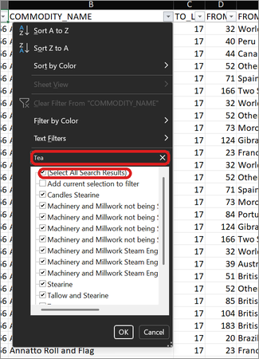
Untick (Select All Search Results), tick only the name that matches exactly, and click OK.
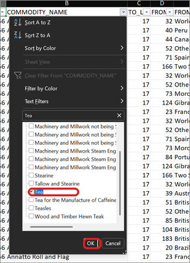
Click the arrow on
YEAR. Untick (Select All), tick the year you want, and click OK.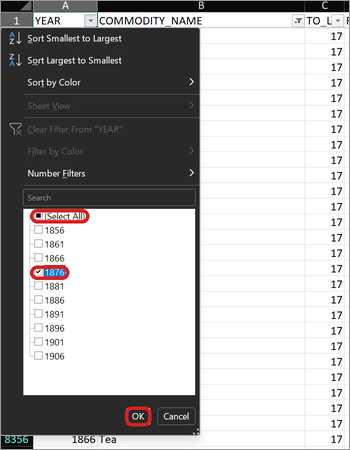
Click the arrow on
AMOUNTand choose Sort Largest to Smallest.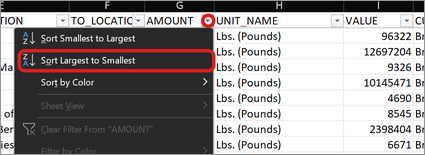
The rows are now in order. The top row is World. Remember what that means.
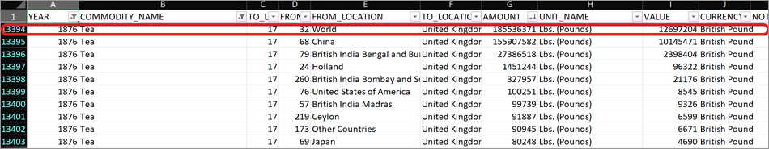
Google Sheets
- Click the filter icon on
COMMODITY_NAMEand open Filter by values. Click Clear, search for the commodity, tick only the exact name, and click OK. - Filter icon on
YEAR> Filter by values > Clear > tick the year > OK. - Filter icon on
AMOUNT> Sort Z → A.
Google's help: Sort & filter your data.
Check your work
- Did you skip the World row? It is the total, not a country.
- Select the
AMOUNTcells for all the country rows (click the first, Shift+click the last) and look at the Sum at the bottom right of the window. Both programs show it. It should match the World row exactly. That is how this database was error-checked.
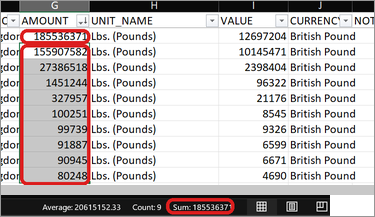
- Your price should be in pounds per ton. If it is a tiny fraction, the division is upside down.
Think about it: how much of the total came from a single country? What would Britain have needed this much copper for in the 1880s?
Video: 3:20
Task 2. Copper over fifty years, and your first chart (20 minutes)
How much did Britain's imports of unwrought copper grow between 1856 and 1906? Make a column chart of the trend, with the years along the bottom (x) axis.
Hint 1: which rows?
You want one number per year: the total. Keep your COMMODITY_NAME filter, clear the YEAR filter (tick Select All again), and filter FROM_LOCATION to World only.
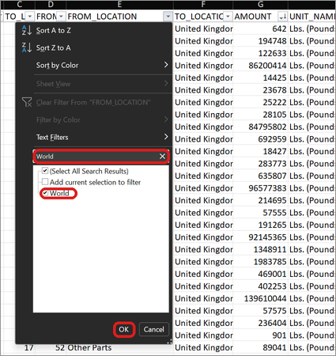
Hint 2: make a small, clean table to chart from
Charts are easiest from a small table of exactly the numbers you want.
Select columns A to Q: click the column letter A, then hold Shift and click Q. Copy (Ctrl+C). Only the visible (filtered) rows will be copied.
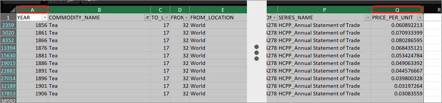
Add a new sheet with the + next to the sheet tabs at the bottom of the window. Click cell A1 and paste (Ctrl+V).
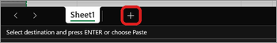
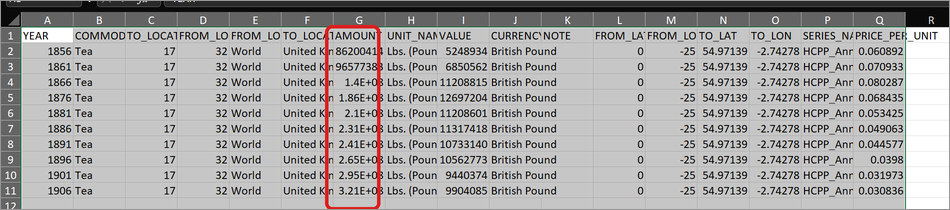
Delete every column except
YEARandAMOUNT. Select the columns you don't need (click a column letter, Shift+click another), right-click a selected column letter, and choose Delete. Do this once for the columns between YEAR and AMOUNT and once for those after AMOUNT.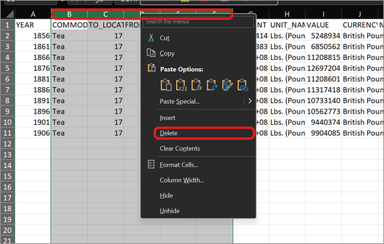
Rename the
AMOUNTheading to say what and which unit (for copper,Tons). You now have years in column A and amounts in column B.
The same steps work in Google Sheets: the + is at the bottom left, and right-clicking a column letter gives Delete columns.
Hint 3: making the chart
Excel
Select only the numbers in column B, not the years and not the heading.
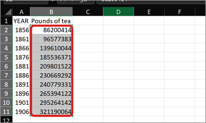
Insert > Insert Column or Bar Chart > Clustered Column (the first 2-D Column option). In Excel, bar charts run sideways and column charts stand upright. Use column for change over time.
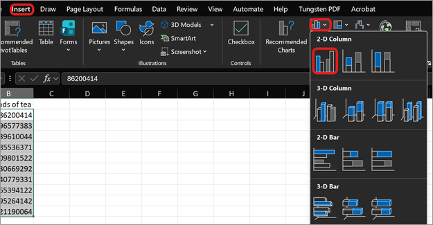
The x-axis reads 1, 2, 3… instead of years. Excel doesn't know where the years are yet.
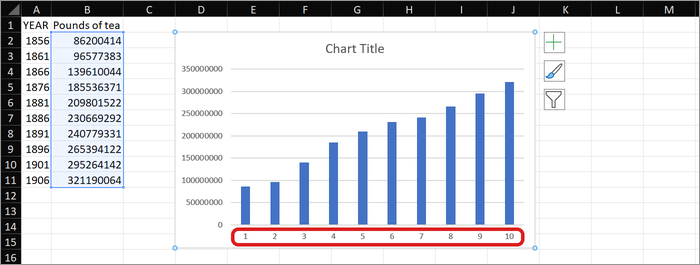
Right-click the chart and choose Select Data.
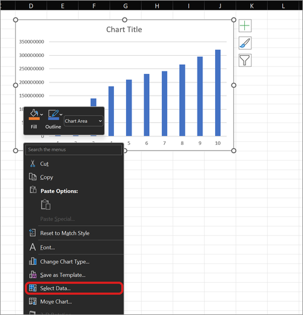
Under Horizontal (Category) Axis Labels, click Edit.
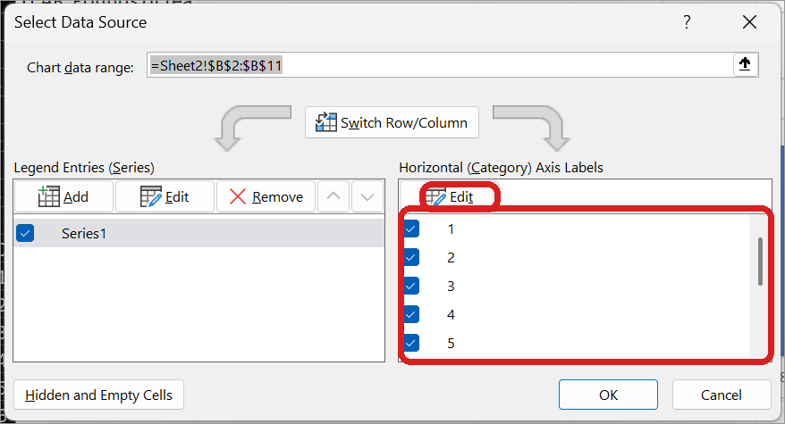
With the small Axis Labels box open, drag across the years in column A, then click OK, and OK again.
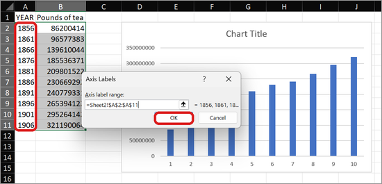
The years are now on the x-axis.
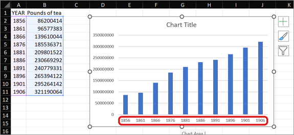
Add axis titles: click the chart, then Chart Design > Add Chart Element > Axis Titles, and choose Primary Horizontal and then Primary Vertical. Click any title to type your own words, including the chart title.
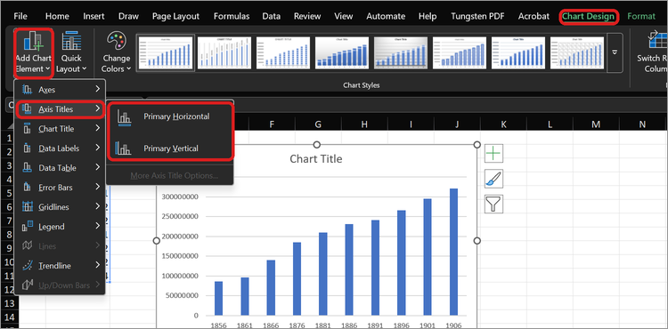
A finished chart has a title that says what, where, and when, and axis titles that give the unit:
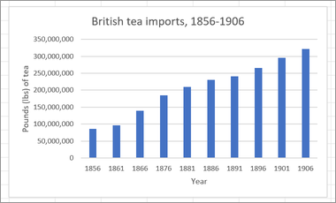
Why not select the years too? Excel sees numbers in both columns, assumes both are data, and draws a second set of bars for the years.
Google Sheets
- Select both columns, including the headings.
- Insert > Chart. In the Chart editor, Setup tab, choose Column chart.
- Check that X-axis shows the year column. If the years appear under Series instead, remove them there (three dots > Remove) and add them as the X-axis.
- To label every year, go to Customise > Horizontal axis and tick Treat labels as text.
- Edit the titles under Customise > Chart & axis titles.
Google's help: Add & edit a chart or graph and Types of charts & graphs.
Now look hard at your chart. Some years are missing. Which ones, and why? The data entry wasn't careless, and the answer is in the spreadsheet.
Hint 4: the missing years
Go back to the main sheet. Open the COMMODITY_NAME filter and search Copper. Read every name on the list and note which years each one covers.
Check your work
- The x-axis should show years, not 1, 2, 3…, and there should be only one set of bars.
- The chart needs a title and axis titles, and the y-axis title should give the unit (tons).
- Can you explain in one sentence why some years have no bar?
Your decision as a historian: once you know why years are missing, decide what goes on the chart. You can keep only the years that match exactly, or you can add related figures by hand and explain how they differ. Either is defensible if you say what you did, in a note under the chart or in your methodology appendix. That habit matters more than anything else for Milestone 4.
Going further: use your price column. What happened to the price of a ton of copper between 1856, 1886, and 1906?
Video: 5:20
Task 3. Raw cotton (20 minutes)
(a) How did Britain's raw cotton imports change between 1856 and 1906? In which year was raw cotton most expensive, and why?
Cotton is measured in hundredweights (cwt). One hundredweight is 112 pounds, or one-twentieth of a ton.
Hint 1
These are the same moves as Task 2. Filter COMMODITY_NAME to raw cotton and FROM_LOCATION to World. Your PRICE_PER_UNIT column already holds the price per hundredweight. Watch for one year where the category has a slightly different name. To see more than one name, tick each one in the filter list.
Check your work
- You should have a World total for all eleven years. If one is missing, look for a slightly different commodity name.
- Your price column should be in pounds per hundredweight. If the numbers are in the thousands or are tiny fractions, check your formula.
Think about it: what was happening in the United States in the early 1860s? Compare the suppliers in 1856 with the suppliers in your most expensive year. Who filled the gap? The Week 3 and Week 5 lectures will help.
(b) How much cotton did the “West Coast of Africa” send to the UK in 1866? What is the last year that name appears as a cotton supplier? Why does it disappear? (The answer is in the spreadsheet.)
Hint 2
Clear the World filter. On FROM_LOCATION, search Africa, then try Coast. Sort by YEAR and read the place names in order.
Check your work
- Did you remove the World filter? Otherwise you will see no individual places at all.
- Read the
FROM_LOCATIONnames in year order, from 1856 to 1906. Which names appear only once? Which new names appear later, and what do they have in common? - Did West African cotton really stop, or did something else change?
Think about it: a column of place names is also a record of who controlled those places.
Task 4. Britain's top ten imports by value, 1901 (10 minutes)
What were the ten most valuable imports in 1901? How many of them are food?
Hint 1
Clear all your filters.
Excel: Data > Clear.
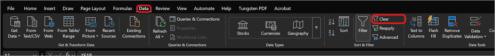
Google Sheets: set each filter back to Select all, or use Data > Remove filter and then Data > Create a filter again.
Then filter YEAR to 1901 and FROM_LOCATION to World, and sort VALUE from largest to smallest, just as you did in Task 1.
Hint 2: look closely
Look for a commodity with Total in its name. Find the rows it adds up. You should count that thing once, not twice.
Before you move on: copy these 1901 World rows (columns A to Q, as in Task 2) into a new sheet, pasting at A1 so the column letters stay the same. Name the sheet 1901: double-click its tab, type the name, and press Enter (both programs). You need it for Task 5.
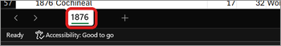
Check your work
- If you added anything up (with SUM or a pivot table), did you leave out the World rows? Including them doubles every number.
- Each import should appear in your top ten only once. Did you check the rows with Total in their names?
- Your largest import should be worth tens of millions of pounds.
Think about it: how many of your ten are food? This dataset is called London's Ghost Acres. Think back to Pomeranz's “ghost acres” in Week 5: what does your list suggest about where Britain's food came from by 1901?
Video: 16:50
Task 5. Top ten by quantity, 1901 (20 minutes)
Now rank the 1901 imports by weight. What are the top ten?
The problem: the units don't match. You can't compare loads of timber with hundredweights of wheat and pounds of tea until everything is in the same unit. Convert to imperial tons:
| Unit in the data | To get tons |
|---|---|
| Tons | already tons |
| Loads (timber) | a load is about one ton of timber: keep as is |
| Tuns (whale oil) | a tun is about one ton of train (whale) oil: keep as is |
| CWTS (Hundredweights) | divide by 20 |
| Lbs. (Pounds) | divide by 2,240 |
| Gallons (petroleum only) | a gallon of petroleum weighs about 6.1 lbs: multiply by 6.1, then divide by 2,240 |
Leave out everything else: goods counted by number (cattle, watches), by yards of cloth, in “great hundreds” (eggs), or recorded by value only.
Hint 1: the straightforward way
- Work in your
1901sheet. Sort it byUNIT_NAME(its filter arrow > Sort A to Z) so each unit sits together in one block. - In R1 type
TONS. - In the first row of a block, type the right formula. For example, if the hundredweights start in row 11, type
=G11/20in R11. For tons, the formula is just=G11. - Click that cell, then Shift+click the cell in column R on the block's last row, and press Ctrl+D (fill down, in both programs). Don't double-click the fill handle here: it would run past the end of the block.
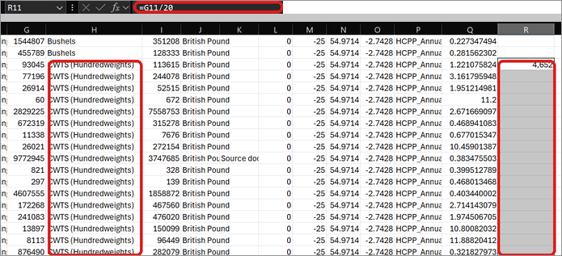
Repeat for each unit you can convert. Finally, sort the whole sheet by TONS, largest to smallest. Empty cells sort to the bottom.
Hint 2: one formula for everything (optional)
If you're comfortable with formulas, paste this into R2 and fill it down with the fill handle. It works in both Excel and Sheets:
=IFS(H2="Tons",G2, H2="Loads",G2, H2="Tuns (whale oil)",G2, H2="CWTS (Hundredweights)",G2/20, H2="Lbs. (Pounds)",G2/2240, AND(H2="Gallons",ISNUMBER(SEARCH("Petroleum",B2))),G2*6.1/2240, TRUE,"")
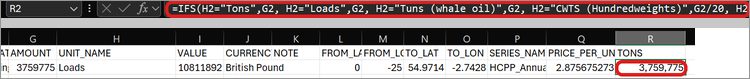
Read it left to right: if the unit is Tons, use the amount; if it is hundredweights, divide by 20…; otherwise leave the cell blank.
Check your work
- Test a row by hand. Pick a hundredweight row, divide its
AMOUNTby 20 on a calculator, and compare the result with your TONS column. Do the same for a pounds row (divide by 2,240). - Rows in units you can't convert should be blank, not zero.
- As in Task 4, count any “Total” only once.
Think about it: compare this list with your Task 4 list. What ranks high by value but low by weight, and the reverse? What disappears from a ranking by weight altogether? If an item on your list puzzles you, look up what it was used for: it may tell you something about British industry.
Video: 19:50
From workshop to Milestone 4
Your Milestone 4 chart will probably use a much smaller dataset you have typed in yourself from your sources. The same habits apply:
- Make a small, clean table: one row per year (or place), one column per measure, with the unit in the column heading.
- Don't count totals twice. Know which rows are totals and which are parts.
- Keep categories and units consistent, or say clearly where they change.
- Label everything: a title that says what, where, and when, and axis titles that include units (tons, £, cwt).
- Credit the source under the chart. For this dataset: Jim Clifford, London's Ghost Acres: British Imports 1856–1906 Database (Zenodo, 2019), from the Annual Statement of Trade of the United Kingdom, House of Commons Parliamentary Papers.
- Make it accessible: write alt text, and use labels that don't rely on colour alone.
- Submit the spreadsheet with the chart.
Getting your chart into your StoryMap
You have three options. The StoryMaps practice kit compares them.
As an image (simplest, not interactive). Excel: right-click the chart and choose Save as Picture. The same menu has View Alt Text, where you can write the chart's alt text.
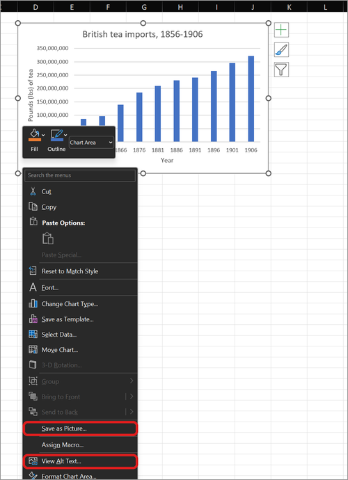
Google Sheets: click the chart, open its three-dot menu, and choose Download > PNG image. Then add the picture to your story with an Image block.
As a StoryMaps Chart block (interactive, fewer options). Copy the small table you built here and paste it into a StoryMaps Chart block.
As an embedded Google Sheets chart (interactive, most options). In Google Sheets, click the chart, then the three-dot menu > Publish chart > Link > Publish, and paste the link into a StoryMaps Embed block. Publishing makes the chart visible to anyone with the link. Google's help: Save or publish your chart.
Whichever you choose, submit the spreadsheet with your chart.